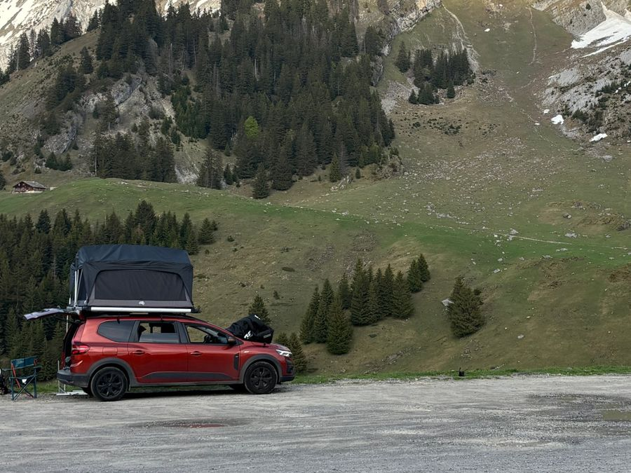
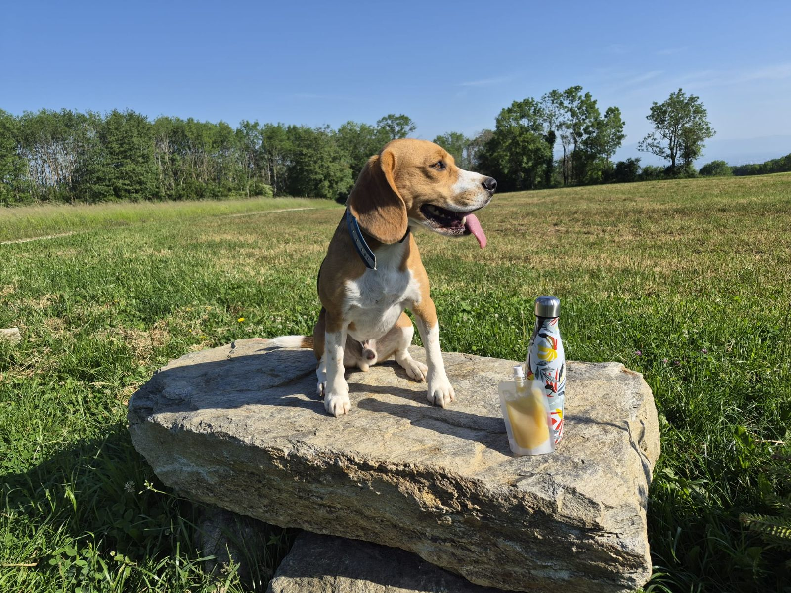
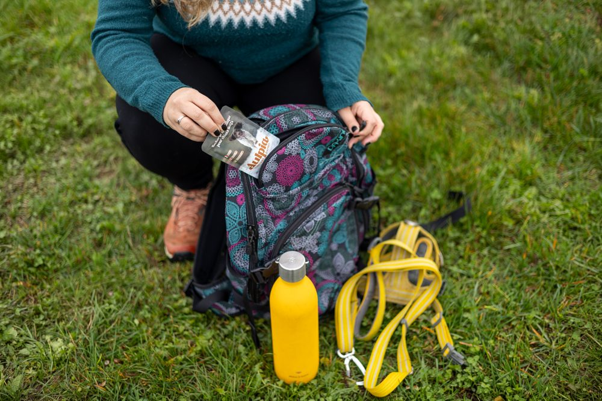

Hydratation et nutrition
Comment l'hydrater, comment nourrir un chien sportif, quand lui donner de quoi tenir, et comment repérer la fatigue.
Rando, canicross, balade du dimanche. Quoi donner, quand, et surtout pourquoi ?
Je suis Aurélia, ASV formée en nutrition animale. Ici, je réponds aux questions qu'on se pose tous au bord du sentier.

Croquettes sous vide, pâtée, petits paquets : comment ranger et conserver la nourriture de ton chien en van ou en tente de toit, sans perdre de place.
Lire l'article →
Boisson électrolytée ou eau simple pendant la rando ? Ce que dit la science, ce que je conseille, et les cas où demander à ton vétérinaire.
Lire l'article →
Eau, laisse, trousse de secours, énergie : la check-list d'une ASV pour préparer le sac de rando de ton chien, sans rien oublier.
Lire l'article →Comment l'hydrater, comment nourrir un chien sportif, quand lui donner de quoi tenir, et comment repérer la fatigue.
Rando, canicross, canitrail, et mes balades en Haute-Savoie. Ce qui marche vraiment, à mon niveau comme au tien.
Comment est née la gourde, ce qu'elle contient et pourquoi je l'ai faite comme ça.
Ton adresse sert uniquement à suivre l'actualité de la marque.